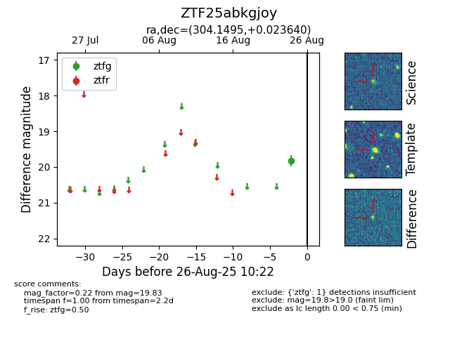

Target ZTF25abkgjoy at 2025-08-26 10:22, see:
FINK: fink-portal.org/ZTF25abkgjoy
Lasair: lasair-ztf.lsst.ac.uk/objects/ZTF25abkgjoy
ALeRCE: alerce.online/object/ZTF25abkgjoy
alt names
ZTF25abkgjoy (ztf,fink)
coordinates:
equatorial (ra, dec) = (304.1495,+0.02364)
galactic (l, b) = (43.0295,-18.84180)
photometry
last ztfg=19.83
1 ztfg detections
